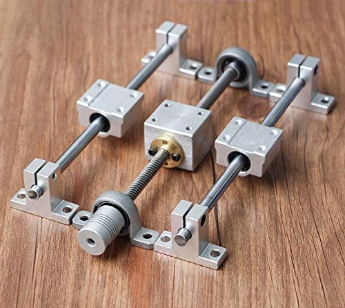

linear bearing assemblies revision 9811
^ Techniques infobox ^^
| image | Linear-bearing-assembly.scad.png |
| designers | |
| date | |
| vitamins | |
| materials | |
| transformations | |
| lifecycles | |
| parts | [[frames|Frames]], [[rails|Rails]], [[nuts|Nuts]], [[bolts|Bolts]], [[linear_bearings|Linear bearings]] |
| techniques | [[bolting|Bolting]] |
| tools | [[wrenches|Wrenches]] |
| git | |
| files | |
| suppliers | |
| reversible | true |
Introduction
A linear-motion bearing or linear slide is a bearing designed to provide free motion in one direction. There are many different types of linear motion bearings.
Motorized linear slides such as machine slides, X-Y tables, roller tables and some dovetail slides are bearings moved by drive mechanisms. Not all linear slides are motorized, and non-motorized dovetail slides, ball bearing slides and roller slides provide low-friction linear movement for equipment powered by inertia or by hand. All linear slides provide linear motion based on bearings, whether they are ball bearings, dovetail bearings, linear roller bearings, magnetic or fluid bearings. X-Y tables, linear stages, machine slides and other advanced slides use linear motion bearings to provide movement along both X and Y multiple axis.
Challenges
Approaches


Todo:
- integrate live spring into hollow side of bolt mount for linear bearing tension adjustment and preload
Drive
Belt and pulley
Rack and pinion
Off the shelf
Screw and nut
Rail
- HPV11 Linear module ballscrew SFU1204 SFU1210 with Linear Guides MGN12 NEMA23 2.8A 76mm stepper motor for CNC milling machine
- HPV6 Linear module ballscrew SFU1204 with Linear Guides HGH15 HIWIN 100% same size with NEMA23 2.8A 56mm stepper motor
Frames
Ground steel profile
Off the shelf
- HGH15/20
- HGR15/20 - HGR Linear rail is similar to MGN Linear rail, however it is larger and more durable.
- MGN9/12/15
- MGW
Supported smooth rods
- SBR - Supported smooth rods
Unsupported smooth rods

Aliexpress: 3D Printer Linear Axis set" loading="lazy">